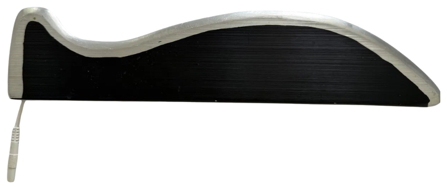

Our Story
It started at the treatment table.
MyoWorks began with a patient and a problem. The soft-tissue treatment we were using was painful enough that the discomfort was working against us — it was setting recovery back further than the therapy moved it forward.
So, mid-session, electrical stimulation was added to the soft-tissue work to ease the discomfort — combining the two into a single, more tolerable approach. It worked. That improvised moment became the seed of the tool now known as MyoOne.
